뉴스룸
- 기업 뉴스
- 브랜드 뉴스
- 뮤지엄 김치간
- 사회공헌 뉴스
1 / 2
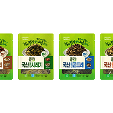
풀무원, 부드럽게 데쳐내 누구나 손쉽게 요리하는 ‘국산 데친 나물’ 4종 출시
바른먹거리 원칙으로 깐깐하게 선별한 고품질 나물을 부드럽게 데친 편의형 제품
국내산 고사리, 시래기, 곤드레, 취나물 4종을 깔끔하게 손질해 부드러운 식감 살려
고온고압 살균공법으로 소비기한 90일까지 늘려 보관 편의성 높여
- 2025년 2월 18일
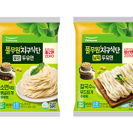
풀무원, ‘지구식단 두유면’ 자체 생산 공장 통해 공급량 4배 확대…’제로면’ 사업 확장 본격화
의령두부 공장으로 생산 이관 완료…월 생산량 약 4배 증가, 다양한 타입의 제품 생산 가능
풀무원지구식단, ‘두유면’ 등 밀가루 없고 영양적 이점 지닌 ‘제로면’ 포트폴리오 다양화
B2B 채널 특성에 맞는 두유면 벌크 제품 출시하여 급식이나 외식 채널로도 확산
- 2025년 2월 17일
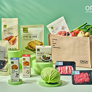
올가홀푸드, 안심먹거리 페스티벌 진행…건강하고 지속가능한 식문화 제안
풀무원 계열의 프리미엄 헬스&웰니스 브랜드 올가홀푸드(이하 올가)는 무항생제 및 무농약 인증 농축산물과 무항생제 및 무농약 인증 원료를 사용한 다양한 제품을 선보이는 ‘안심 먹거리 페스티벌’을 전국 오프라인 매장에서 오는 27일까지 진행한다고 16일 밝혔다.
- 2025년 2월 16일
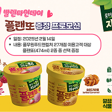
풀무원푸드앤컬처, 발렌타인데이 맞아 식물성 아이스크림 증정 프로모션 진행
풀무원의 푸드서비스 전문 기업 풀무원푸드앤컬처가 발렌타인데이를 맞아 고객들에게 풀무원의 식물성 아이스크림 제품 ‘풀무원지구식단 플랜또(Planto, 474ml)’를 증정하는 특별 프로모션을 진행한다고 12일 밝혔다.
- 2025년 2월 12일
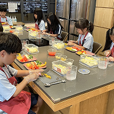
풀무원 뮤지엄김치간, 올해 7,500명 대상 무료 ‘김치학교’ 운영
한국의 김치와 김장문화의 계승 발전을 위해 앞장서 온 풀무원 뮤지엄김치간이 새해를 맞이해 올해 7,500명을 대상으로 대표적인 사회공헌 활동인 ‘김치학교’ 프로그램을 무료로 운영한다고 22일 밝혔다.
- 2025년 1월 22일
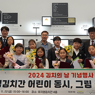
풀무원 뮤지엄김치간, 11월 22일 ‘김치의 날’ 기념 ‘어린이 김치 공모전’ 시상
한국의 김치와 김장 문화의 계승 발전을 위해 앞장서 온 풀무원 뮤지엄김치간은 11월 22일 ‘김치의 날’을 기념해 ‘어린이 동시, 그림 김치 공모전’ 시상식을 개최했다고 24일 밝혔다.
- 2024년 11월 24일
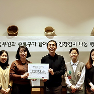
풀무원 뮤지엄김치간, 김치의 날 맞아 김장 나눔 봉사활동 진행
한국의 김치와 김장 문화의 계승 발전을 위해 앞장서 온 풀무원 뮤지엄김치간이 11월 22일 김치의 날을 맞아 임직원들과 함께하는 김장김치 나눔 봉사활동을 진행했다고 18일 밝혔다.
- 2024년 11월 18일
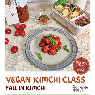
풀무원 뮤지엄김치간, 2030 대상 무료 김치학교 프로그램 참여자 모집
작년 2030세대 호응에 힘입어 올해 ‘Fall in love with Kimchi’ 프로그램 운영
가을 피크닉 컨셉으로 비건 김치와 비건 사이드밀 만들기 체험 진행
뮤지엄김치간 홈페이지에서 9월 20일(금) 오후 2시부터 선착순 신청 가능
- 2024년 9월 13일
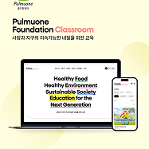
풀무원재단, 교육 플랫폼 ‘풀무원재단 클래스룸’ 오픈…온라인으로 교육 사업 확대
‘바른먹거리 교육’ 등 풀무원재단의 대표 교육 온라인으로 들을 수 있는 플랫폼 구축
교육 소개부터 지구시민 교육 추천 도서까지 확인 가능한 콘텐츠로 플랫폼 구성
지속가능한 사회 형성·발전 위한 지식 쌓을 수 있는 다양한 분야의 전문가 교육 영상도 제공
- 2025년 2월 06일
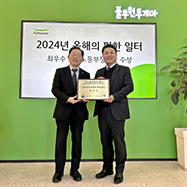
풀무원 장애인 표준 사업장 '풀무원투게더', '올해의 편한 일터’ 고용노동부 장관상 수상
풀무원투게더, 고용노동부와 한국장애인고용공단이 선정하는 ‘올해의 편한 일터’에서 최우수상인 고용노동부 장관상 수상
장애인 일자리 창출과 장애인 편의시설 설치 및 장애인 친화적 근무 환경 조성 노력 인정
풀무원투게더, 지난 10월 ‘장애인고용 우수사업주’로도 선정, 중증·여성 장애인 고용 확대 성과
- 2024년 12월 20일
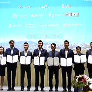
풀무원, 서울시와 ‘외로움 없는 서울을 위한 MOU’ 체결…‘서울라면·서울짜장’ 지원
풀무원식품(대표 김진홍)은 서울특별시(시장 오세훈, 이하 서울시), 서울시복지재단(대표이사 진수희)과 ‘외로움 없는 서울을 위한 업무협약’을 체결하고, ‘서울마음편의점’에 서울라면과 서울짜장을 제공한다고 3일 밝혔다.
- 2024년 12월 03일
풀무원, 세이브더칠드런 ‘2024 아동권리영화제’에 피자와 두부스낵 후원
풀무원이 ‘2024 세이브더칠드런 아동권리영화제’ 후원에 나선다. 풀무원(대표 이효율)은 아동권리 인식 개선을 주제로 11월 한 달간 온라인과 오프라인에서 열리는 ‘2024 세이브더칠드런 아동권리영화제’에 세이브더칠드런 취약계층 아동 300여 명과 관람객을 대상으로 ‘노엣지피자 토마토&미트콤보’와 ‘SOYA 두부칩’ 등 총 1,700여개의 제품을 후원한다고 19일 밝혔다.
- 2024년 11월 19일